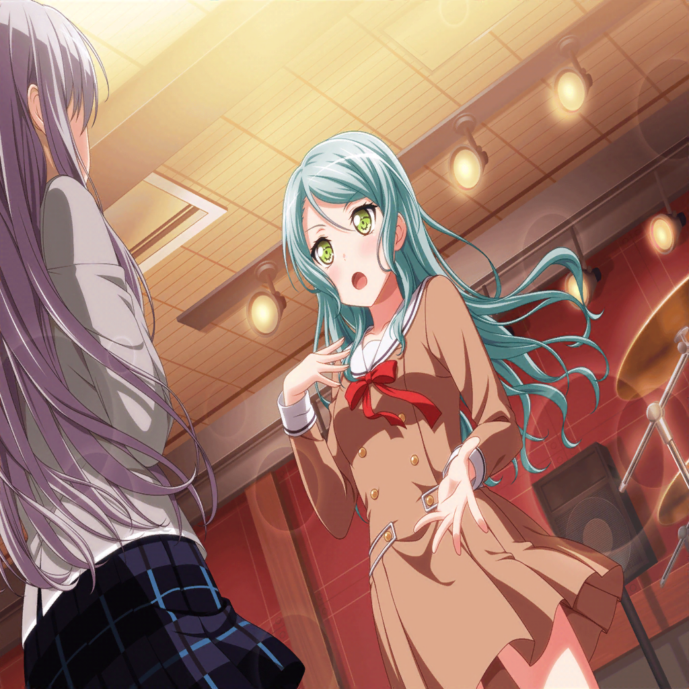

スタジオ
友希那
……
友希那
（何度歌ってみたところで、何もわからない。
どうすれば、誇りを取り戻せるのか）
友希那
（本当に暗闇に迷い込んでしまったみたい……）
紗夜
（……あら？
あそこにいるのは……）
紗夜
（スタジオに来て練習しているということは、きっと
彼女なりに何か見つけようとしているのね）
友希那
あ……
紗夜
一人で練習ですか
友希那
……まだ、取り戻せない。
だから、歌いにきたの。でも、それも意味がないみたい
紗夜
あなたは……あなたと私は、似ていると思います
紗夜
あなたは私の背中を押してくれた。
今度は、私があなたの背中を押せる時かもしれません
紗夜
この問題について考えている時に自分の中の
変化に気が付いたんです
紗夜
きっと以前なら、ここまでバンドの問題に向き合わなかった
かもしれない。それがなぜ、こんな風にあなたを説得したり、
バンドのことを考えるようになったのか
紗夜
それは、私がRoseliaの氷川紗夜だから
友希那
Roseliaの……
紗夜
そうしてくれたのは、あなたが背中を押してくれたからです。
妹と比べない私……自分の音を持つ、私……
紗夜
少しずつ、日菜を見返そうとしている私から、
Roseliaのギタリストの私へと変わっていったんです

紗夜
あなたも同じ
友希那
私も……？
紗夜
あなたもきっと……もう、お父様の影を追いかけるだけの
湊友希那ではないはず
友希那
あ……！
紗夜
あなたは何者なのか。
もう一度考えれば、答えは見えてくるはずです
友希那
（私が何者なのか……それは昔から変わってない）
友希那
私は……
翌日
スタジオ
あこ
友希那さんが戻ってきてくれるまで、練習は続けないとね！
紗夜
きっと、湊さんなら戻ってきてくれるはずです
紗夜
（あなたなら、きっと……）
燐子
は、はい……！
燐子
（氷川さんがこんなに力強く言ってくれると……
不思議と本当にそんな気がする……）
燐子
（今井さんとはまた違った……強さ……）
友希那
みんな……っ！
あこ
友希那さん！？
燐子
……！
友希那
みんな……
友希那
……
紗夜
……
友希那
……っ
リサ
ゆ、友希那……っ！！！
友希那……！ あの……っ！！
紗夜
……今井さん
リサ
……っ
友希那
……SMSの失敗からずっと考えていた。
なぜ、お客さんが離れていってしまったのか。昔の私達と
違うところはどこなのか
友希那
……昔に戻れば、昔のような音が取り戻せるんじゃないかと
思ったけれど、それは間違いだった
友希那
音を取り戻すこと。それはRoseliaとしての誇りを
取り戻すこと。そう思ってずっと考えてきたけれど……
わからなかった
友希那
……誇りを取り戻すまで、あなた達に顔向けできないと
そう思っていた。でも……
友希那
私は……Roseliaの湊友希那だから……
友希那
誇りを失おうが、惨めだろうが、私はRoseliaの
湊友希那でいたい……！ その為に、ここにいさせてほしい！
友希那
私は……ここで歌を歌うことしか……できないから……
リサ
……友希那……っ！
燐子
友希那さんは、惨めなんかじゃない！
……そんなこと、あるわけない……っ！！
燐子
友希那さんは……そうやってRoseliaのことをずっと……
考えて……一人で悩んで……誇りを取り戻そうとして……
燐子
そうやって一人で悩み抜いた友希那さんが……惨めな
わけ、ない……！ でも……
燐子
『わたし達』は『Roselia』です……！
わからないなら……一緒に……探せばいい……！
リサ
Roseliaの湊友希那でありたいって気持ち……
そこに友希那の『誇り』はあるんだよ……！
紗夜
あなたは一度だって誇りを失ったことなんかない。
ずっと、誇りを持ち続けていたからこそ、
こうして悩み続けたんです
あこ
あ、あこ！ Roseliaのことやっぱり誰よりもカッコイイ
バンドだって思ってます！ Roseliaがカッコイイバンドで
いる為に、この５人の誰が抜けてもダメだって思います！！
友希那
……ごめんなさい……こんな私を……
もう一度受け入れてくれて……
リサ
ううん、友希那。アタシ達だって、ずっと『Roselia』を
見てこなかったのは同じことなんだよ
燐子
わたし達は……今……ようやく『Roselia』になれたんです
あこ
うん……うん……っ！
あこ、Roseliaが大好きです！！